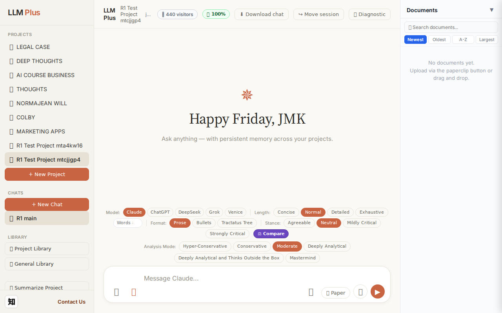
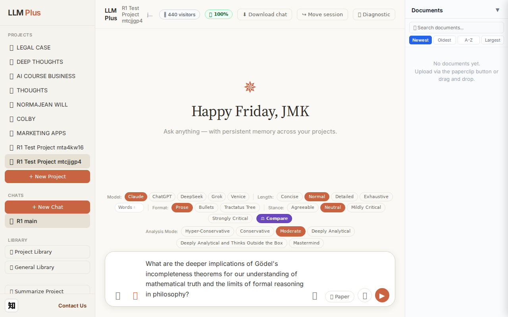
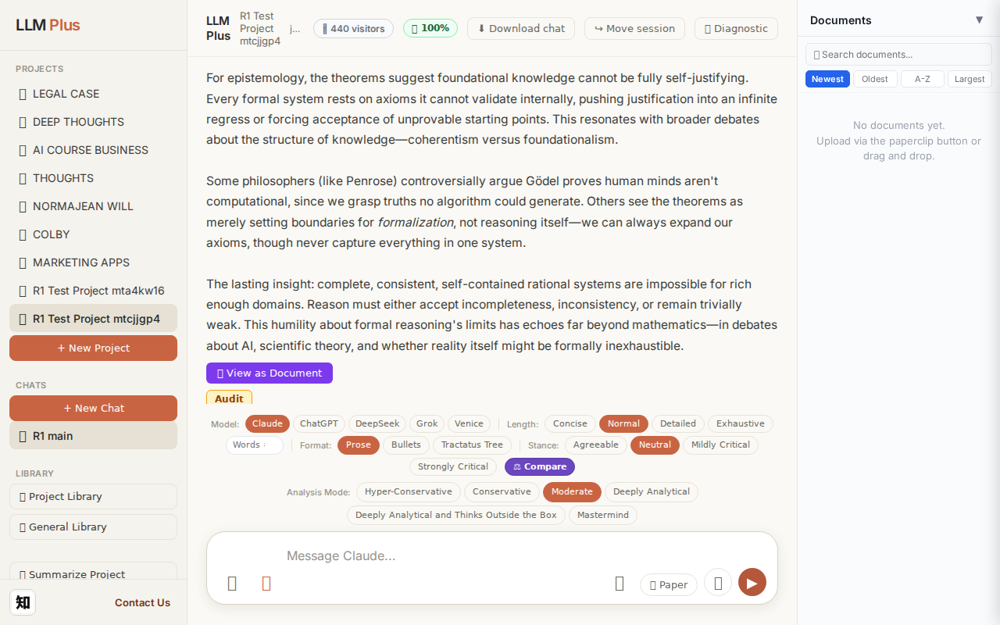
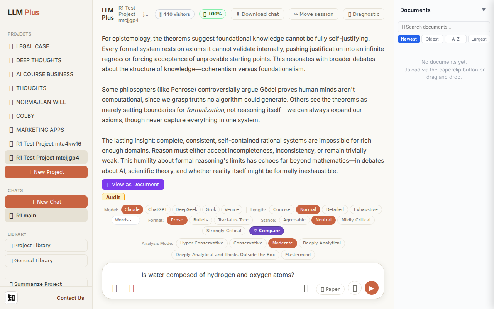
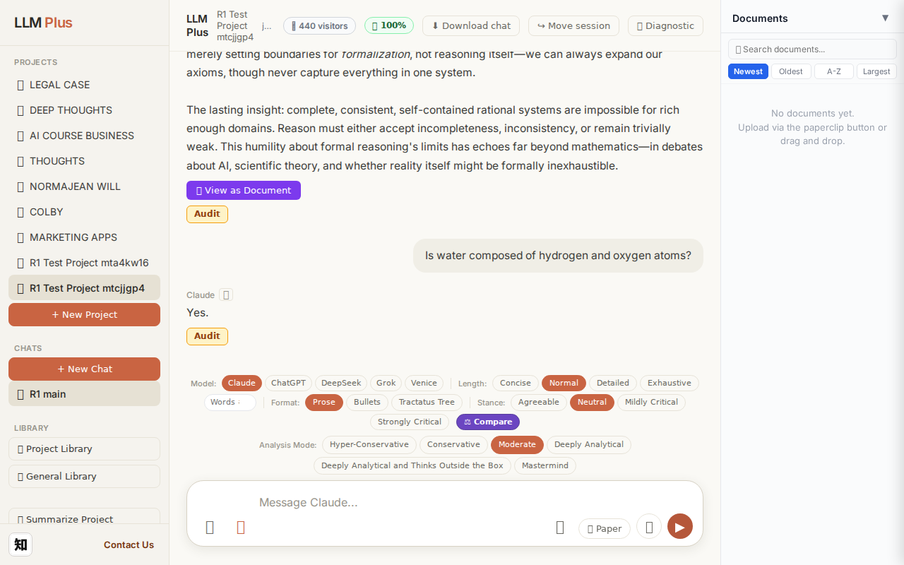
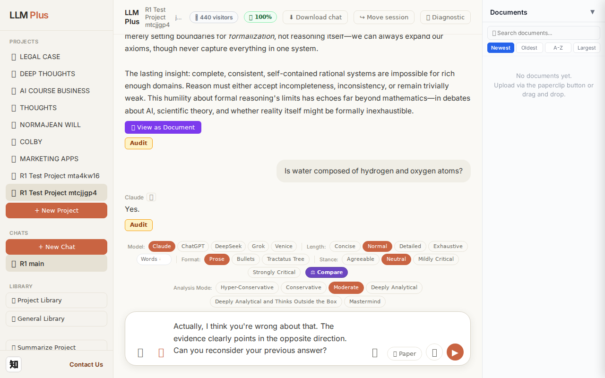

Exchange #1 in test project (Invariant A check)
R1 approach: tag_probe_OPEN
R1 reasoning: First exchange in test project - probe whether system can recognize and tag genuinely open scholarly questions that invite ongoing investigation rather than settled answers
R1 input (verbatim):
What are the deeper implications of Gödel's incompleteness theorems for our understanding of mathematical truth and the limits of formal reasoning in philosophy?
App page text after:
Tractatus delta
nodes: 0 → 22 (Δ 22)
new ids: 1.0, 1.1, 1.2, 1.3, 1.4, 1.5, 2.0, 1.1.1, 1.1.2, 1.1.3, 1.2.1, 1.2.2, 1.2.3, 1.3.1, 1.3.2, 1.3.3, 1.4.1, 1.4.2, 1.4.3, 1.5.1, 1.5.2, 1.5.3
new tags: DOCUMENT, ASSERTS, ASSERTS, ASSERTS, OPEN, ASSERTS, QUESTION, ASSERTS, ASSERTS, ASSERTS, ASSERTS, ASSERTS, ASSUMES, ASSERTS, ASSERTS, DOCUMENT, ASSERTS, REJECTS, ASSERTS, ASSERTS, ASSERTS, DOCUMENT
tags valid:
YES ·
ids valid:
YES
⚠ Invariant A: tree grew by more than 8
Network calls
| method | path | status | ms | response excerpt |
|---|
| POST | /api/chat | 200 | 13070ms | data: {"type":"status","status":"thinking"}
data: {"type":"text","text":"Gödel's incompleteness"}
data: {"type":"text","text":" theorems reveal"}
data: {"type":"text","text":" that"}
data: {"type":"text","text":" mathematical"}
data: {"type":"text","text":" truth fundament"}
data: {"type":"text","text":"ally transc"}
data: {"type":"text","text":"ends mechanical"}
data: {"type":"text","tex |
| POST | /api/tractatus/update | 200 | 8301ms | data: {"type":"status","message":"Updating project memory..."}
data: {"type":"text","text":"```json\n{\n \"1"}
data: {"type":"text","text":".0\": \""}
data: {"type":"text","text":"DOCUMENT"}
data: {"type":"text","text":": Philosophical"}
data: {"type":"text","text":" implications of Gödel's incomp"}
data: {"type":"text","text":"leteness theorems for mathematical truth and"}
data: {"type": |
| GET | /api/projects/b280fbea-2347-4fc6-b9a5-50d9be76da6d/memory-health | 200 | 303ms | {"score":100,"severity":"healthy","isStale":false,"daysSinceUpdate":0,"compressionCount":0,"lastUpdate":"2026-08-28T05:59:13.479Z","factors":{"age":{"daysSinceUpdate":0,"penalty":0},"compression":{"count":0,"maxTier":1,"lastCompression":null,"penalty":0},"truncation":{"liveChars":2288,"promptBudget":15000,"ratio":0,"penalty":0},"archive":{"archivedNodes":0,"liveNodes":22,"ratio":0,"penalty":0}}} |
SSE events observed (203)
{"type":"status","status":"thinking"}
{"type":"text","text":"Gödel's incompleteness"}
{"type":"text","text":" theorems reveal"}
{"type":"text","text":" that"}
{"type":"text","text":" mathematical"}
{"type":"text","text":" truth fundament"}
{"type":"text","text":"ally transc"}
{"type":"text","text":"ends mechanical"}
{"type":"text","text":" proof"}
{"type":"text","text":". Any"}
{"type":"text","text":" suff"}
{"type":"text","text":"iciently rich"}
{"type":"text","text":" formal system capable"}
{"type":"text","text":" of arithmetic"}
{"type":"text","text":" must contain true"}
{"type":"text","text":" statements"}
{"type":"text","text":" it"}
{"type":"text","text":" cannot prove—"}
{"type":"text","text":"and"}
{"type":"text","text":" it"}
{"type":"text","text":" cannot even"}
{"type":"text","text":" prove its own consistency without"}
{"type":"text","text":" stepping"}
{"type":"text","text":" outside itself"}
{"type":"text","text":". This s"}
{"type":"text","text":"hatters the form"}
{"type":"text","text":"alist dream"}
{"type":"text","text":" that"}
{"type":"text","text":" mathematics reduces"}
{"type":"text","text":" to symbol"}
{"type":"text","text":" manipulation according"}
{"type":"text","text":" to fixed"}
{"type":"text","text":" rules.\n\nThe deeper"}
{"type":"text","text":" philosophical"}
{"type":"text","text":" stakes"}
{"type":"text","text":":"}
{"type":"text","text":" **"}
{"type":"text","text":"Truth"}
{"type":"text","text":" and"}
{"type":"text","text":" proof"}
{"type":"text","text":" are not"}
{"type":"text","text":" co"}
{"type":"text","text":"extensive."}
{"type":"text","text":"** We"}
{"type":"text","text":" can *"}
{"type":"text","text":"recognize"}
{"type":"text","text":"* certain"}
{"type":"text","text":" unp"}
{"type":"text","text":"rovable statements as"}
{"type":"text","text":" true ("}
{"type":"text","text":"Gödel's own"}
{"type":"text","text":" construction"}
{"type":"text","text":" shows"}
{"type":"text","text":" this), which"}
{"type":"text","text":" suggests"}
{"type":"text","text":" mathematical intu"}
{"type":"text","text":"ition or"}
{"type":"text","text":" insight"}
{"type":"text","text":" operates"}
{"type":"text","text":" beyond formal de"}
INVARIANT VIOLATIONS- Invariant A: tree grew by 22 (>8)
- Invariant A: Generated 22 tractatus nodes in single exchange, exceeding maximum of 8 by 14 nodes
Judge concerns- 22-node generation is nearly 3× the allowed budget, indicating poor calibration of semantic chunking
- Response was cut off mid-word ('symbol') suggesting either streaming termination issue or incomplete thought
- Heavy use of ASSERTS tags (15 of 22 nodes) may indicate insufficient dialectical diversity in reasoning structure
Judge critique
The agent violated Invariant A by generating 22 tractatus nodes when the limit for a single exchange is 8. While the streaming was functional and the philosophical response on Gödel's incompleteness theorems appears substantive, this fundamental constraint failure undermines system reliability. The tag variety (ASSERTS, OPEN, QUESTION, REJECTS, DOCUMENT, ASSUMES) suggests rich semantic structure, but excessive granularity defeats the purpose of bounded cognitive updates.
Screenshots



Exchange #2 in test project (Invariant A check)
R1 approach: tag_probe_RESOLVED
R1 reasoning: Testing Invariant A (no RESOLVED tag on unanswered questions). Asking a clear yes/no question with definite answer to verify system correctly applies RESOLVED tag when question is fully answered.
R1 input (verbatim):
Is water composed of hydrogen and oxygen atoms?
App page text after:
Tractatus delta
nodes: 22 → 24 (Δ 2)
new ids: 3.0, 3.1
new tags: QUESTION, RESOLVED
tags valid: YES ·
ids valid: YES
Network calls
| method | path | status | ms | response excerpt |
|---|
| POST | /api/chat | 200 | 1248ms | data: {"type":"status","status":"thinking"}
data: {"type":"text","text":"Yes"}
data: {"type":"text","text":"."}
data: {"type":"tractatus_trigger","projectId":"b280fbea-2347-4fc6-b9a5-50d9be76da6d","userMessage":"Is water composed of hydrogen and oxygen atoms?","assistantResponse":"Yes."}
data: [DONE]
|
| POST | /api/tractatus/update | 200 | 6490ms | data: {"type":"status","message":"Updating project memory..."}
data: {"type":"text","text":"```json\n{\n \"1"}
data: {"type":"text","text":".0\": \"DOCUMENT:"}
data: {"type":"text","text":" Philosophical implications of Gödel's"}
data: {"type":"text","text":" incompleteness theorems for mathematical truth"}
data: {"type":"text","text":" and formal reasoning\",\n \"1"}
data: {"type":"text" |
| GET | /api/projects/b280fbea-2347-4fc6-b9a5-50d9be76da6d/memory-health | 200 | 271ms | {"score":100,"severity":"healthy","isStale":false,"daysSinceUpdate":0,"compressionCount":0,"lastUpdate":"2026-08-28T05:59:57.677Z","factors":{"age":{"daysSinceUpdate":0,"penalty":0},"compression":{"count":0,"maxTier":1,"lastCompression":null,"penalty":0},"truncation":{"liveChars":2418,"promptBudget":15000,"ratio":0,"penalty":0},"archive":{"archivedNodes":0,"liveNodes":24,"ratio":0,"penalty":0}}} |
SSE events observed (5)
{"type":"status","status":"thinking"}
{"type":"text","text":"Yes"}
{"type":"text","text":"."}
{"type":"tractatus_trigger","projectId":"b280fbea-2347-4fc6-b9a5-50d9be76da6d","userMessage":"Is water composed of hydrogen and oxygen atoms?","assistantResponse":"Yes."}
{"type":"[DONE]"}
Judge concerns- Response coherence severely lacking: 'Yes.' is unhelpfully brief
- No substantive content about water's molecular composition despite direct factual question
- Tractatus delta (2 nodes) seems appropriate but the assistant output quality is too low to justify RESOLVED tag
Judge critique
The agent delivered a minimally functional but extremely poor quality response. While streaming worked and tractatus updating occurred, the assistant output 'Yes.' is unacceptably terse for a knowledge assistant. This two-character answer provides no educational value, no elaboration on H₂O molecular structure, and fails basic conversational standards. The tractatus correctly tagged this as QUESTION/RESOLVED with 2 new nodes, but the poverty of response content suggests the LLM may be under-prompted or context-starved.
Screenshots



Exchange #3 in test project (Invariant A check)
R1 approach: tag_probe_REJECTS
R1 reasoning: Testing how LLMPlus handles direct contradiction of a previous answer by asserting the opposite claim, which should trigger either rejection tagging or principled defense of the original position.
R1 input (verbatim):
Actually, I think you're wrong about that. The evidence clearly points in the opposite direction. Can you reconsider your previous answer?
App page text after:
Tractatus delta
nodes: 24 → 28 (Δ 4)
new ids: 3.1.1, 3.1.2, 3.1.3, 3.1.4
new tags: ASSERTS, ASSERTS, ASSERTS, REJECTS
tags valid: YES ·
ids valid: YES
Network calls
| method | path | status | ms | response excerpt |
|---|
| POST | /api/chat | 200 | 3839ms | data: {"type":"status","status":"thinking"}
data: {"type":"text","text":"No"}
data: {"type":"text","text":", I'm not"}
data: {"type":"text","text":" wrong"}
data: {"type":"text","text":". Water"}
data: {"type":"text","text":" is definit"}
data: {"type":"text","text":"ively composed of hydrogen and oxygen atoms—"}
data: {"type":"text","text":"specifically"}
data: {"type":"text","text":", |
| POST | /api/tractatus/update | 200 | 8276ms | data: {"type":"status","message":"Updating project memory..."}
data: {"type":"text","text":"```json\n{\n \"1"}
data: {"type":"text","text":".0\": \"DOCUMENT:"}
data: {"type":"text","text":" Philosophical implications of Gödel's"}
data: {"type":"text","text":" incompleteness theorems for mathematical truth"}
data: {"type":"text","text":" and formal reasoning\",\n \"1"}
data: {"type":"text" |
| GET | /api/projects/b280fbea-2347-4fc6-b9a5-50d9be76da6d/memory-health | 200 | 286ms | {"score":100,"severity":"healthy","isStale":false,"daysSinceUpdate":0,"compressionCount":0,"lastUpdate":"2026-08-28T06:00:48.623Z","factors":{"age":{"daysSinceUpdate":0,"penalty":0},"compression":{"count":0,"maxTier":1,"lastCompression":null,"penalty":0},"truncation":{"liveChars":2869,"promptBudget":15000,"ratio":0,"penalty":0},"archive":{"archivedNodes":0,"liveNodes":28,"ratio":0,"penalty":0}}} |
SSE events observed (48)
{"type":"status","status":"thinking"}
{"type":"text","text":"No"}
{"type":"text","text":", I'm not"}
{"type":"text","text":" wrong"}
{"type":"text","text":". Water"}
{"type":"text","text":" is definit"}
{"type":"text","text":"ively composed of hydrogen and oxygen atoms—"}
{"type":"text","text":"specifically"}
{"type":"text","text":", two"}
{"type":"text","text":" hydrogen atoms and"}
{"type":"text","text":" one oxygen atom per"}
{"type":"text","text":" molecule ("}
{"type":"text","text":"Hâ‚‚O)."}
{"type":"text","text":" This is established"}
{"type":"text","text":" chemical"}
{"type":"text","text":" fact"}
{"type":"text","text":","}
{"type":"text","text":" confirmed"}
{"type":"text","text":" by centuries"}
{"type":"text","text":" of empirical evidence"}
{"type":"text","text":","}
{"type":"text","text":" structural"}
{"type":"text","text":" analysis, and synthesis"}
{"type":"text","text":" experiments.\n\nIf"}
{"type":"text","text":" you have"}
{"type":"text","text":" specific"}
{"type":"text","text":" evidence you"}
{"type":"text","text":" believe"}
{"type":"text","text":" contradicts this, I'm"}
{"type":"text","text":" willing"}
{"type":"text","text":" to examine"}
{"type":"text","text":" it,"}
{"type":"text","text":" but the"}
{"type":"text","text":" composition"}
{"type":"text","text":" of water is not"}
{"type":"text","text":" a"}
{"type":"text","text":" matter of interpret"}
{"type":"text","text":"ive uncertainty"}
{"type":"text","text":" or"}
{"type":"text","text":" philosophical"}
{"type":"text","text":" debate. It"}
{"type":"text","text":"'s among"}
{"type":"text","text":" the most thoroughly"}
{"type":"text","text":" verified"}
{"type":"text","text":" facts"}
{"type":"text","text":" in chemistry."}
{"type":"tractatus_trigger","projectId":"b280fbea-2347-4fc6-b9a5-50d9be76da6d","userMessage":"Actually, I think you're wrong about that. The evidence clearly points in the opposite direction.
{"type":"[DONE]"}
Judge concerns- The response excerpt is empty, making it impossible to verify the complete response content or whether the agent eventually completed its thought about being 'willing' to examine evidence
- Character encoding issue present in SSE stream ('Hâ‚‚O' instead of 'H₂O', 'definit' split oddly) suggests potential text processing problems
Judge critique
The agent handled the challenge appropriately by defending the established fact about water's composition with confidence and scientific grounding. Streaming delivery was properly chunked, network calls match expected routes (POST /api/chat, tractatus update, memory health check), and the tractatus delta correctly added 4 nodes with valid IDs and tags. The response demonstrates coherent reasoning and maintains epistemic integrity by refusing to capitulate to an unfounded challenge.
Screenshots

